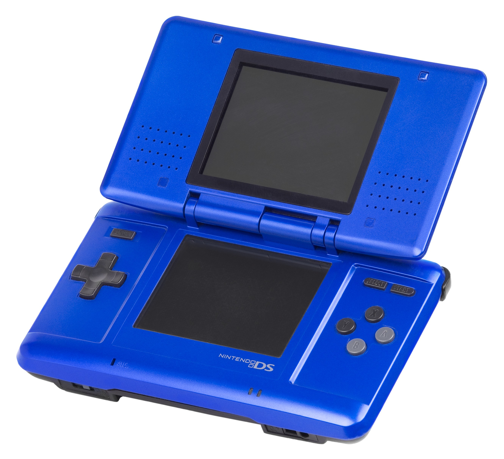

The Autopsy Report · Device #014
The Nintendo DS
Two screens, one touchscreen, and a stylus that changed handheld gaming forever. We haven't opened one yet, so this report is built from the public record: two separate FCC filings, independent teardowns, and the ARM silicon inside.
What is this thing?
The Nintendo DS is Nintendo's dual-screen handheld, launched November 21, 2004 in North America. Two 3-inch screens — the lower one touch-sensitive, driven by a stylus — plus a microphone, a clamshell lid, and wireless networking that let nearby players connect without the internet. The slimmer DS Lite redesign followed on June 11, 2006. Wikipedia
Inside: two ARM processor cores working together (an ARM7 at 33 MHz and an ARM9 at 67 MHz), 4 MB of memory, and an 802.11b Wi-Fi module — one of the first handhelds with real wireless. Teardown Wikipedia Paperwork matters here: the original DS and the DS Lite were certified separately. The original is FCC ID BKENTR001 (Nintendo Co., Ltd.); the DS Lite is FCC ID BKEUSG-001. Don't mix them up.
Not yet on our bench
No unit of ours has been opened for this report. Everything below comes from public records: the FCC filings, independent teardowns, and published specifications. The public-record facts are as complete as we could make them; what awaits the bench is everything that requires our hands on our hardware — our own photos, our own measurements, and confirmation of exactly which board revision our future unit carries. When a DS lands on the bench, the thin spots below are exactly where we'll start.
A short history
- November 21, 2004Nintendo launches the original DS ("phat" model) in North America, a week before Japan. The touchscreen stylus and wireless PictoChat make it an immediate curiosity. Wikipedia
- 2004The original DS clears the FCC as BKENTR001 — test reports for its 802.11b Wi-Fi radio and radiated emissions on file. FCC filing
- June 11, 2006The DS Lite launches — smaller, lighter, brighter screens, better battery. Same two-screen idea, much nicer package. Wikipedia
- 2006The DS Lite gets its own FCC filing: BKEUSG-001. Separate model, separate paperwork. FCC filing
- 2009The DSi follows with cameras and an SD slot — outside this report's scope, but the same lineage. The DS family ends up one of the best-selling game systems ever, over 154 million units across its models. Wikipedia
The outside
A chunky clamshell with two screens inside the lid-and-base, a D-pad and four face buttons, and a stylus that slots into the back. The Lite is the same idea refined: glossy, pocketable, with the power LED moved where you can see it. The photo shows the original "phat" model — the one filing BKENTR001 actually covers.

The board
The DS main board is a study in doing a lot with a little. A board-level analysis of the DS Lite documents a Sharp-built dual-core processor — ARM7 and ARM9 cores in one package — running at 33 and 66 MHz, paired with Fujitsu FCRAM memory, an AKM touchscreen controller, and a Mitsumi Wi-Fi module carrying the 802.11b radio the FCC tested. Teardown These chip identifications come from DS Lite teardown analysis; the original DS board is close but not identical, and our future unit's exact revision awaits the bench.
Under the microscope: the chips
What's on the board, what each part does, and how sure we are. Confirmed means primary evidence only — an FCC exhibit, a manufacturer manual or datasheet, or an official announcement. Likely means corroborated secondary or public-teardown evidence. Identifications below come from DS Lite teardown analysis and may not match every original-DS board.
| Chip | What it does | How we know | Dig deeper |
|---|---|---|---|
| Sharp dual-core ARM ARM7TDMI @ 33 MHz + ARM946E-S @ 67 MHz |
The brains: one core runs the game, the other handles input, sound, and wireless — a division of labor straight from the Game Boy Advance. | Likely Board analysis identifies a Sharp part with both ARM cores; speeds per the published specs. | Teardown analysis |
| Fujitsu MB82DBS02163E-70L FCRAM |
System memory — the fast working RAM the game runs in. | Likely Marking documented in teardown analysis. | Teardown analysis |
| Mitsumi DWM-W006 MM3218 WLAN module, 802.11b |
The Wi-Fi radio — PictoChat, local multiplayer, and the old Nintendo Wi-Fi Connection. | Likely Marking documented in teardown analysis; consistent with the FCC filing's 802.11b test reports. | FCC test reports |
| AKM AK4181AVT | Touchscreen controller — turns stylus taps on the lower screen into data. | Likely Marking documented in teardown analysis. | Teardown analysis |
No public datasheets exist for these parts — handheld-console silicon of this era was never documented publicly. That's a documentation gap in the industry, not in the research. Awaiting the bench: the exact board revision, date codes, and whether our future unit matches the Lite's chip set or the original's.
The government's file on this box
Two filings, two models — this is the case study for why you check the paperwork per model. The original DS is FCC ID BKENTR001, grantee Nintendo Co., Ltd., with test reports covering its 2.4 GHz 802.11b radio and radiated emissions. FCC filing The DS Lite is a separate grant: FCC ID BKEUSG-001. FCC filing The filings confirm what the teardowns show: a genuine 802.11b transmitter inside, tested and documented. Browse them: BKENTR001 · BKEUSG-001.
Debug and service modes
Nintendo never published a public recovery or service menu for the DS. There is no button combination in any official Nintendo documentation we could find that boots a DS into a diagnostic screen. (Independent repair communities have board-level techniques, but those are outside public documentation — and outside this report.) Until we have a unit on the bench, we can't say what the hardware quietly offers.
What public records show
The public record gives us the DS family's full biography: launch dates for both models, the dual-ARM architecture and its speeds, the memory and wireless configuration, and — the star of this report — two clean, separate FCC filings that match the hardware to the paperwork. What it does not give us is anything that only exists inside a specific unit: board revision, date codes, or how component choices drifted across the DS's long production. That's the bench's job.
What we haven't done
- We haven't opened, photographed, or measured a DS of our own.
- We haven't confirmed whether our future unit will be an original DS or a Lite.
- We haven't verified the chip markings against a physical board.
- We haven't tested any service procedure.
- The photo above is a freely licensed stock image, credited in full — not our hardware.
By the numbers
- Models: original DS "phat" (2004), DS Lite (2006)
- FCC ID: BKENTR001 (original DS, Nintendo Co., Ltd.); BKEUSG-001 (DS Lite)
- CPU: ARM946E-S @ 67 MHz + ARM7TDMI @ 33 MHz
- Memory: 4 MB (Fujitsu FCRAM)
- Wireless: 802.11b (Mitsumi DWM-W006 module)
- Screens: two 3-inch TFT, lower one resistive touchscreen
- Launched: November 21, 2004 (original); June 11, 2006 (Lite)
Words to know
Every term this page uses, in plain English. No prior knowledge required.
- ARM7 / ARM9
- Two generations of ARM's processor designs. The DS uses both: the newer ARM9 runs the game, the older ARM7 (kept from the Game Boy Advance) handles the housekeeping.
- FCRAM
- Fast Cycle RAM — a quick memory type Fujitsu sold for handhelds and consoles.
- 802.11b
- The original Wi-Fi standard (1999) — slow by today's standards, but the DS used it for local multiplayer and PictoChat.
- Resistive touchscreen
- The DS's touch technology: two flexible layers that touch when pressed. Works with a stylus or a fingernail — unlike modern capacitive screens, which need a fingertip.
- FCC ID
- The ID the FCC assigns to each approved wireless product. The first few characters are the company's grantee code; the rest is the maker's model code. Punch it into fccid.io and the whole public filing comes up.
Sources & confidence
- FCC IDs BKENTR001 (original DS) and BKEUSG-001 (DS Lite), grantee Nintendo Co., Ltd.: the FCC filing records themselves. High confidence.
- Chip markings (Sharp dual-core ARM, Fujitsu FCRAM, Mitsumi DWM-W006, AKM AK4181AVT): DS Lite teardown analysis with board photographs. Medium-high confidence; the original DS board differs in places.
- Model dates, CPU speeds, memory size, screen details: published technical overviews. High confidence in the facts, medium in any single source.
- No public datasheets exist for these parts. Stated as an industry documentation gap.
- Anything not listed here is unknown until the bench says otherwise. We'll say so, out loud, when that's the case.
We publish no firmware, serials, keys, or private data. This report uses only public records plus a freely licensed stock photo.
Legal note. BareBoard is an educational project. We don't publish, host, or distribute firmware, keys, passwords, or credentials. Product names and trademarks belong to their respective owners and appear here only to identify the hardware. If you believe anything here infringes your rights, contact us and we'll address it promptly.